公開日: 2020年7月
レシピ難易度：★★★☆☆
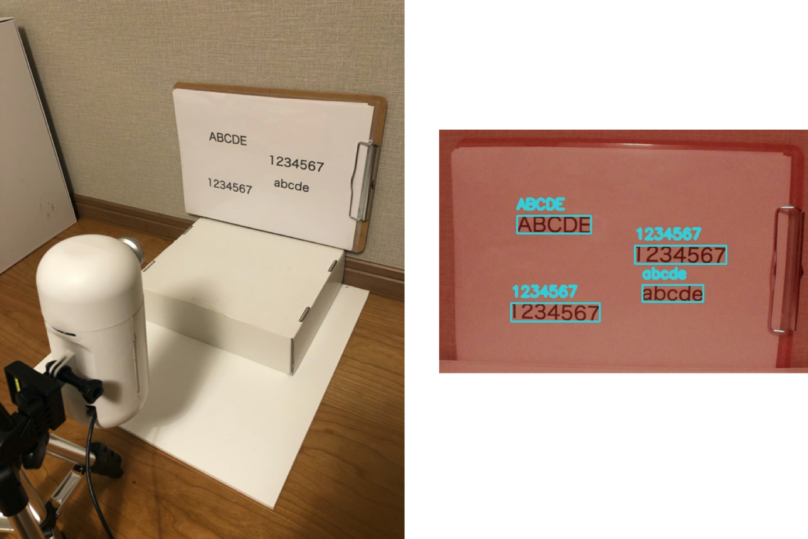
現場に行かないとわからない機器のモニター表示やホワイトボードの表記を遠隔から確認できると、生産性があがり業務間の連携も強化されます。
人が現場に行って確認、それを転記するオペレーションをデジタルに見える化する手段として、このレシピではIoTカメラを使ったOCRの手順をご案内します。
ソラコムの提供するプログラマブルなエッジ AI カメラ S+ Camera Basic を利用し、カメラに映った数字や文字を読み取ってOCR(Optical Character Recognition)によって電子データ化します。
全体構成
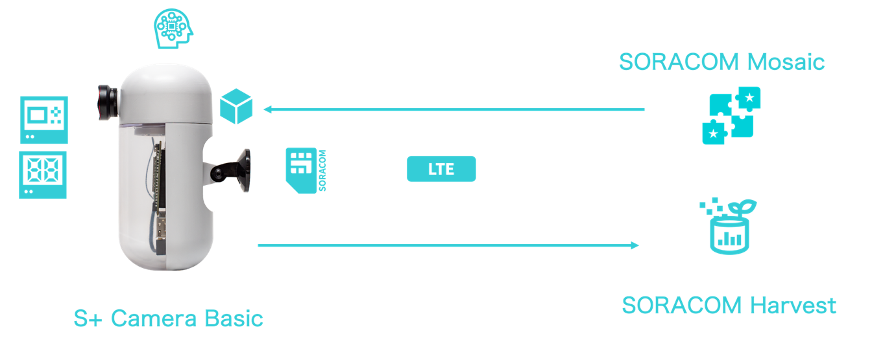
本レシピを行うために必要な時間、概算費用
本レシピは以下の通りです。
- 必要な時間: 約1時間15分
- 概算費用: 約82,000円
※ 概算費用:
- S+ Camera Basic費用 49,800円
- 月額費用 2,200円
- SORACOM Air, SORACOM Inventory, SORACOM Mosaic、SORACOM Harvestの各種サービスの概ねの費用 (税や送料などの付帯費用や無料枠適用は考慮しないものとしています)を含む。
このコンテンツの進め方
ページの内容を読み、また作業を行ったら右下の［Next］を押して次のステップへ進みます。また、［Back］を使って戻ったり、左のナビゲーションメニューでもページの移動が可能です。
左上の［×］を押してコンテンツを終了することができます。また、ページを開きなおすことで再開できます。ページのアドレスはブラウザの［履歴］メニューを利用してください。
本レシピを行うためには以下のものをご用意ください。
ハードウェア
品名 | 数量 | 価格 | 購入先 | 備考 |
S+ Camera Basic | 1 | 79,800円 | ― | |
パソコン | 1 | ― | ― |
|
※ 金額はレシピ作成時となります。ソラコムで販売している金額は税抜き・送料別です。
その他必要なもの
必要なもの | 費用 | 作成方法など |
SORACOM アカウント | 無料※ |
※ アカウント作成・維持の費用の料金です。
S+ Camera Basic にはSIM(SORACOM Air Plan-D)が内蔵されています。そのため、最初にデバイスを利用する場合、ソラコムコンソールへログインして SIM の受け取り確認を行ってください。確認が完了するとSIM管理の一覧にSIMが表示されます。
次に、グループ作成画面よりS+ Camera Basicで利用するグループを作成します。作成したグループに対して以下のサービスを有効にします。
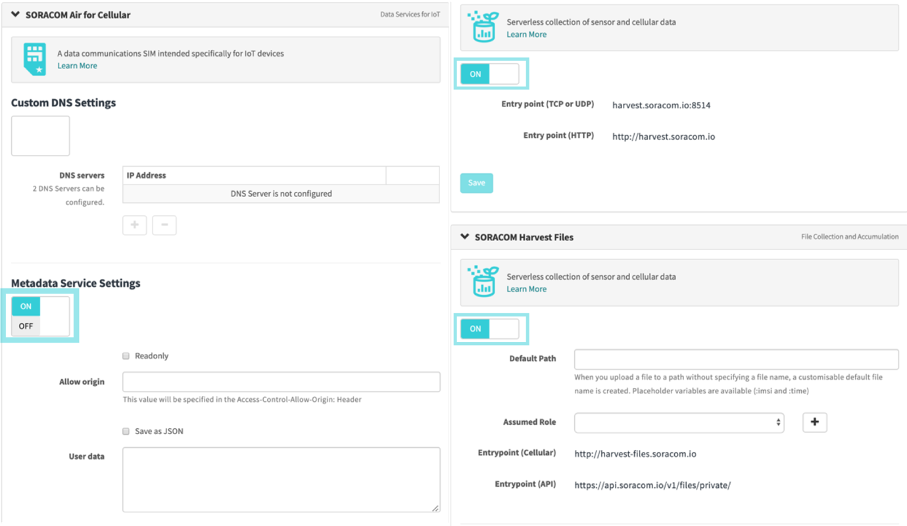
先ほど作成したグループをS+ Camera Basicに割り当てるとともに、Speed classをs1.fastに変更します
(画像の送信に時間がかかると場合エラーになる場合があるので、s1.fastを設定してください。)
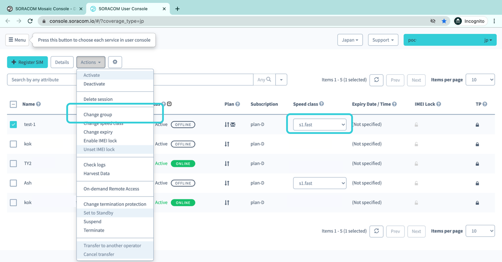
電源をいれて青いLEDが点滅すると、SORACOM Mosaic ConsoleにS+ Camera Basicが登録され、自動的にオンラインになります。

SORACOM Mosaicコンソールにアクセスしてカメラデバイスの状態を確認しましょう。SORACOMコンソールのグローバルメニューからアクセスできます。
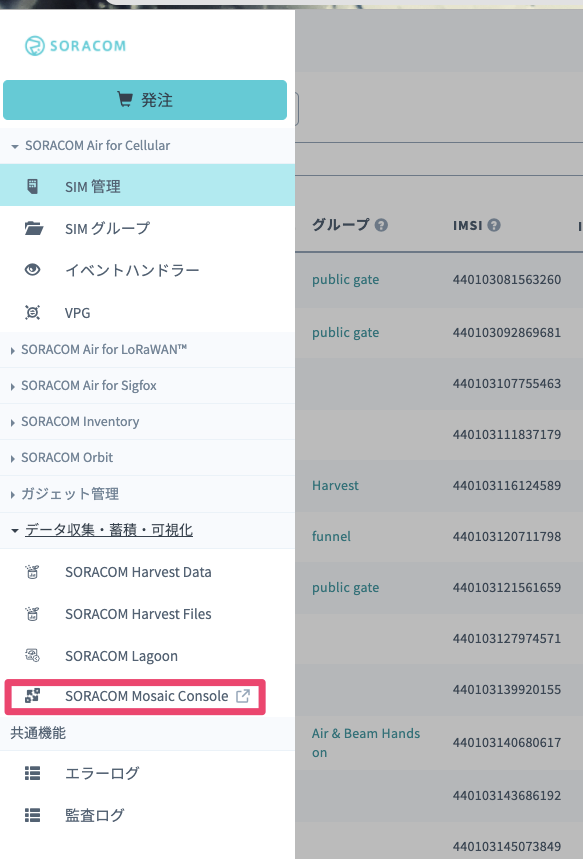
前述のとおり、S+ Cameraの電源を入れると自動的にデバイス登録が実行され、リストに表示されます。最初はSIMのIMSIからデバイスを見分けるのがいいでしょう。（最初は一台だけから始められると思うので、このサンプル画面のように迷うことはないかもしれませんが）
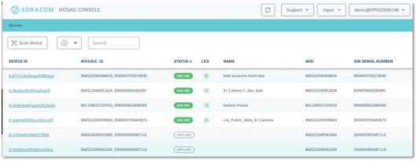
リストに自分のカメラが表示されたら、DEVICE IDのカラムに表示されているIDのリンクをクリックすると下記のようなデバイスの詳細画面が表示されます。
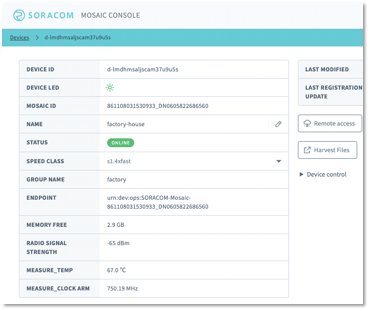
Device ID一覧から対象のデバイスをクリックすると、デバイスの詳細画面に移動します。現在カメラに写っている画像は、デバイス詳細画面のCAMERAメニューから確認することができます。
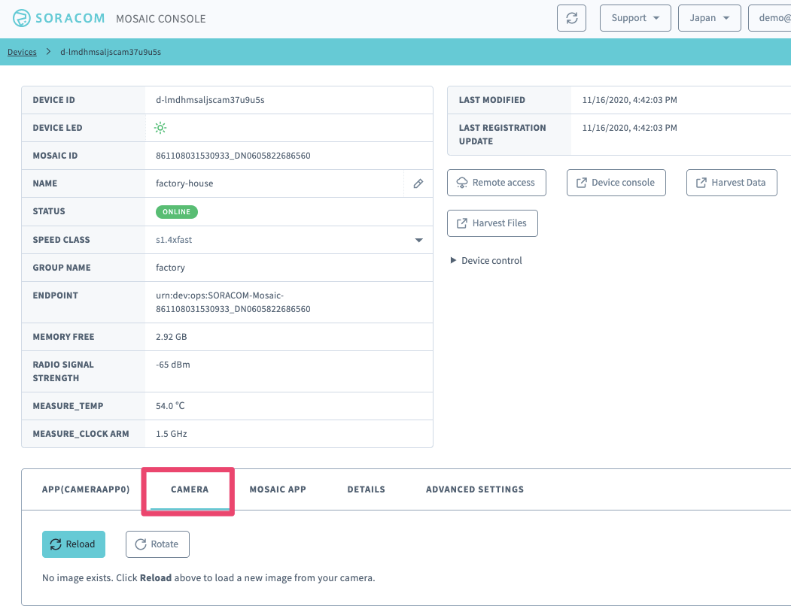
Updateボタンをクリックすると現在のカメラの画像が表示されます。
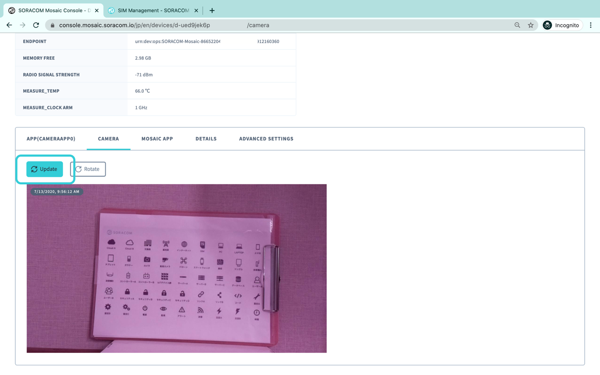
S+ Camera Basic向けのサンプルアルゴリズムは多数公開されており、GUIから簡単にインストールして試すことができるようになっています。今回のテーマでもあるOCRのサンプルアルゴリズムをインストールしてみましょう。
デバイス詳細画面のAPP(CAMERAAPP0)タブを開き「Install new algorithm」というボタンを押してください。
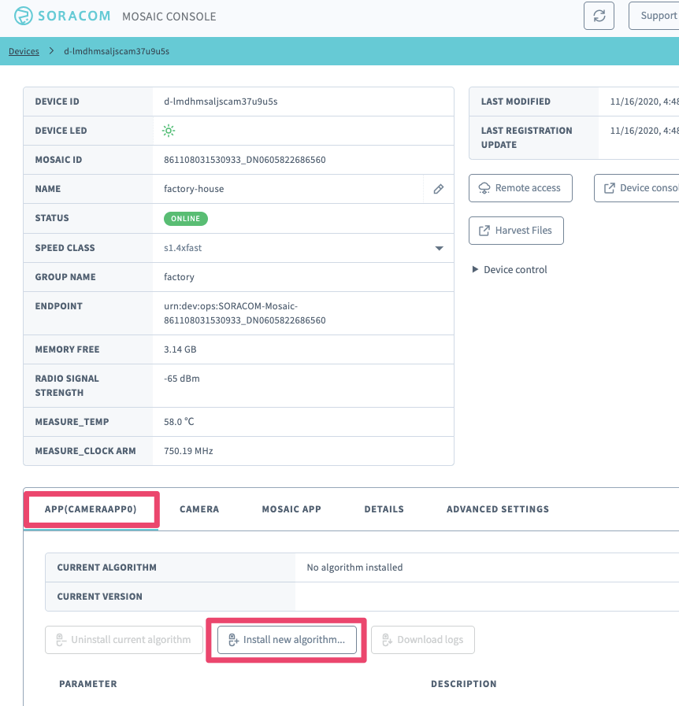
公開済みのサンプルアルゴリズムの一覧が表示されますので、リストの中からOCRを選択してInstallを実行してください。
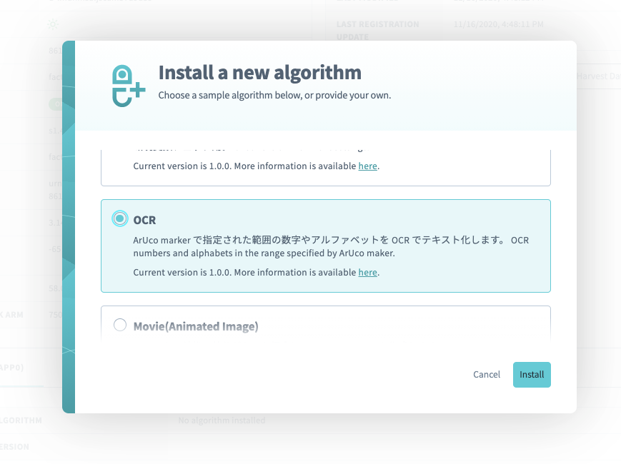
インストールは1〜2分で終わります。下記の画像のようにCameraApp OCR Sampleの名称とバージョンが表示されるようになっていたらOKです。
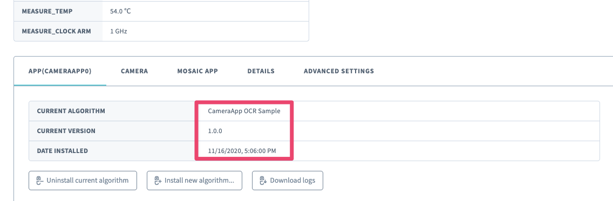
さて、ここから実際に試してみましょう。このアルゴリズムはARマーカーに囲われた英数字をデータ化し、その読み取ったテキストデータをSORACOM Havest Dataへ、読み取ったテキストデータを元画像に対して付与した下記のような画像をSORACOM Harvest Filesにアップロードします。なお、データや画像ファイルのアップロードは、データ読み取りに成功したときのみ実行されます。（つまり、カメラの画角内に読み取れる対象が何も配置されていない場合、データはアップロードされません）
ARマーカーについてはこちらに作成方法とサンプルがありますのでご利用ください。まず試すだけであれば、ここにある画像をそのまま印刷すればOKです。
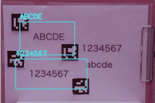
上記のような素材に対して数分間カメラを向けて置くと、SORACOM Havest Dataに以下のようなデータがアップロードされ始めるのが確認できます。
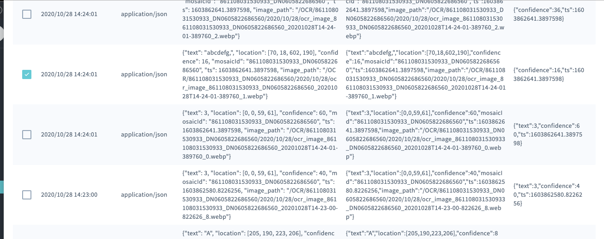
より実践的に、以下のようなオフラインのメーターをデータ化するということにチャレンジしてみたいと思います。
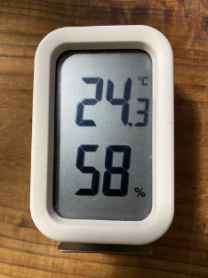
この温湿度計に使われている字体は7セグメント(フォント)と呼ばれ、私達にはおなじみのものですが、ゴシック体や明朝体やサンセリフ体などのより一般的に利用されるフォントとは違い、コンピュータにとっては見慣れないもののようで、tesseractというこのサンプルアルゴリズムで利用しているOCRエンジンでも、デフォルトでは読み取ってくれません。ではどうすればいいのでしょうか？
これを解決する方法として、7セグメントを読み取るために学習されたデータを用意し、それをOCRエンジンに適用して動かしていきます。
とは言っても適用用法は簡単です。デバイス詳細画面のAPP(CAMERAAPP0)タブのPARAMETERにそれぞれ以下の値を指定してください。
SORACOM_ENV_URI
https://raw.githubusercontent.com/Shreeshrii/tessdata_ssd/master/ssd_int.traineddataSORACOM_ENV_FREE_PARAM
{
"OEM": 1,
"PSM": 6,
"TESSDATA_DIR": "./"
}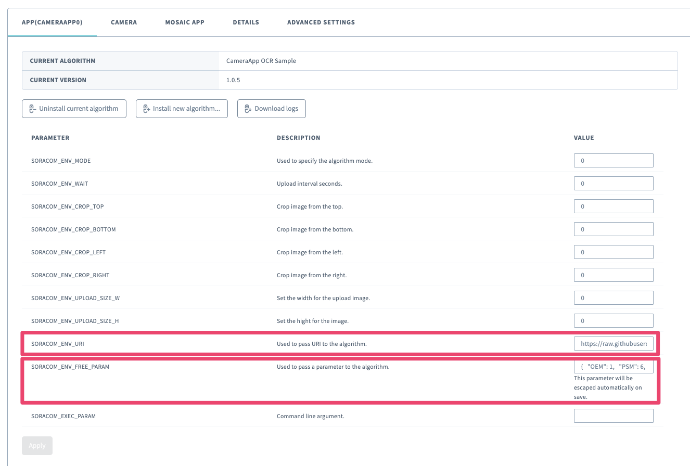
これらのPARAMETERの値は文字列としてアルゴリズムに渡されます。アルゴリズムは、SORACOM_ENV_URIに指定されたURLから学習済みファイルをダウンロードします。またSORACOM_ENV_FREE_PARAMに指定された文字列をJSONとしてパースし、内部に保存された値を使って挙動を変化させています。より具体的にはTESSDATA_DIRはそのファイルの保存先をOCRエンジンに対して教えるためにつかう、といった具合です。（このあたりはあくまでみなさまご自身のアルゴリズム開発の際に「こんな使い方があるんだな」という参考として見ていただければ大丈夫です）
さて、さっそく読み取ってみましょう。下記の例では左側は27、右側は26といった形で、整数部のみですがきれいに読み取れました。（なお、やはりここでもARマーカーは必要になってきます）
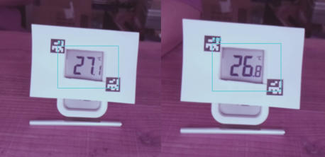
先程の例では読み取ったデータをSORACOM Harvest Dataで参照していましたが、もちろんSORACOM Lagoonでより高度な可視化を行うこともできます。まずは下記の例のようにテーブル形式で読み取りデータをそのまま表示してやるのがよいでしょう。Textという項目に実際に読み取られた文字データが入ってきます。これを見ながら読み取り結果が満足な形になるようにカメラの画角や明るさなどを調整していきましょう。
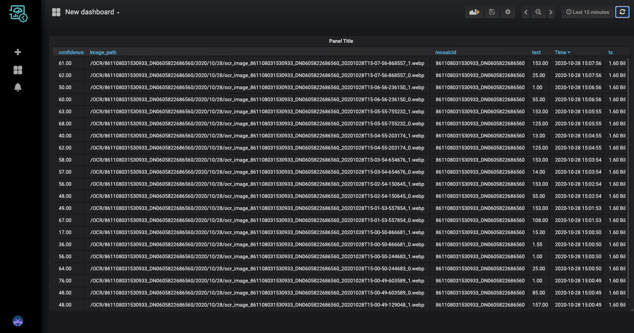
本レシピでは費用がかかるサービスを利用しています。本項をよく読み、必要な操作や解除作業を行うようにして、想定外の費用が掛からないようにしてください。
費用について
ここで記載している金額は全て税別、送料別となります。
SORACOM プラットフォームの利用料金
サービス／機能 | 料金 |
(今回の利用であれば 100MB 以内で収まる範囲) | |
1 リクエストあたり 0.004 円 | |
SORACOM Harvest FIles は一般的なファイル管理サービスとは異なり「データ転送量」に応じた課金体系です。保管されているファイル(サイズ)には費用は発生しません。例えば先月に1GBのファイルのアップロードを行った場合、1GBの転送に関して課金されます。翌月の転送が0バイトだった場合、先月の1GB分は保管されていますが、このファイルには費用は発生しません。 | |
300 円 (SIM 1枚あたり、月額、税別) | |
最初の登録: 1 USD/台・回 50 円/台・月 | |
月額費用 1,700円。利用月は無料。 |
※ 費用詳細はリンク先をご確認ください。
SORACOM Harvest Dataにアップロードしたデータ、SORACOM Harvest Filesにアップロードしたファイル、SORACOM Inventoryのデバイス、SORACOM Mosaicなど必要ない場合には削除/解約処理をお願いします。
本レシピでは、OCRによって、通信機能を持たない機器の数値や文字を電子化してSORACOM Harvest Dataに送信しました。OCRの結果とカメラの映像を同時に出したいときや、ある数値が検出された際にアラートを出したいような場合にはSORACOM Lagoonをご利用いただけます。
よくあるご質問はこちらでご案内しています。